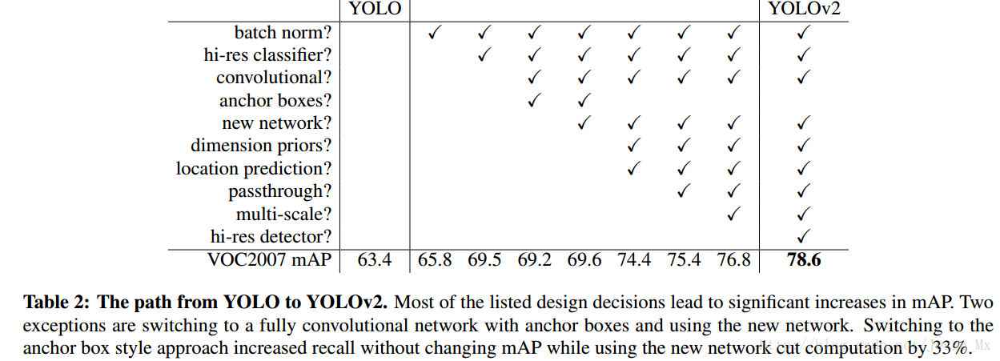
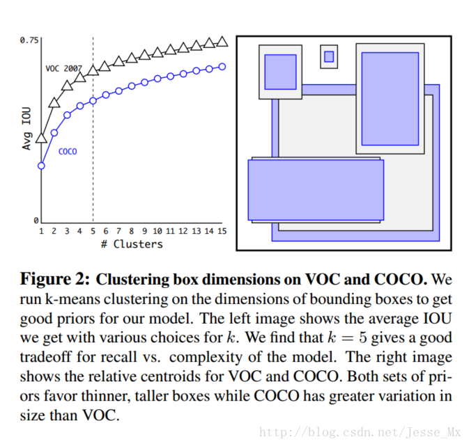
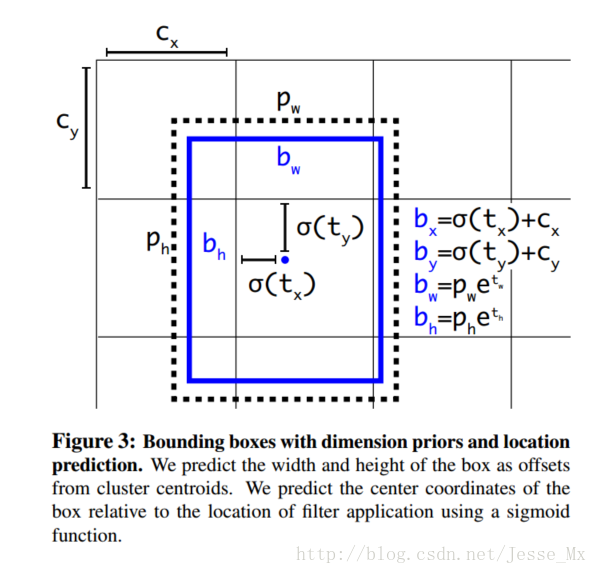

title: 目标检测：YOLO
comments: true
mathjax: true
date: 2019-12-17 11:13:10
tags:
categories:
对yolo的印象就是快，yolo把整个目标检测（分类和定位）当作一个回归问题，直接从图像像素输出bbox坐标和类别，如下图:
yolo使用一个卷积神经网络同时预测多个检测目标。它首先把图像resize到$448 \times 448$，图像通过卷积网络后生成bbox坐标和分类，然后用NMS进行筛选。


网络有24个卷积层和2个全连接层。使用交替的$1\times1$卷积层来减少前面层的特征空间。网络使用ImageNet进行预训练（仅仅用了一半的分辨率$224\times224$)
先在ImageNet上做了预训练。使用上图网络结构中的前20个卷积层，后面接一个average-pooling层和全连接层，在ImageNet 1000类数据集上训练了一周，达到了88%的top-5准确率。
由于Ren的论文提到给预训练的模型加上额外的卷积层和全连接层能够提升性能，所以加上了剩下的4个卷积层和2个全连接层，权值为随机初始化。同时，我们把网络输入的分辨率提高到$448\times448$
网络的最后一层输出bbox坐标和分类概率。bbox长宽除以原图长宽，使其分布到0，1之间。同样中心坐标也被化为某个网格单元位置的偏移量，也分布在0，1之间。
优化目标是一个平方和损失函数（回归问题），但是有如下问题：
完整的损失如下：

上面仅仅是yolo v1的内容，后面有空再看看后续改进的方面

Batch Normalization层对网络的每一层的输入都做了归一化，可以加快收敛。原来的YOLO算法（采用的是GoogleNet网络提取特征）是没有BN层的，因此在YOLOv2中作者为每个卷积层都添加了BN层。另外由于BN可以规范模型，所以就把dropout去掉了。实验证明添加了BN层可以提高2%的mAP。
原来的YOLO网络在预训练的时候采用的是 $224\times 224$ 的输入（这是因为一般预训练的分类模型都是在ImageNet数据集上进行的），然后在detection的时候采用$448\times 448$的输入，这会导致从分类模型切换到检测模型的时候，模型还要适应图像分辨率的改变。而YOLOv2则将预训练分成两步：先用$224\times 224$的输入从头开始训练网络，大概160个epoch（表示将所有训练数据循环跑160次），然后再将输入调整到$448\times 448$，再训练10个epoch。注意这两步都是在ImageNet数据集上操作。最后再在检测的数据集上fine-tuning，也就是detection的时候用$448\times 448$的图像作为输入就可以顺利过渡了。作者的实验表明这样可以提高几乎4%的MAP。
原来的YOLO是利用全连接层直接预测bounding box的坐标，而YOLOv2引入Faster R-CNN中anchor的思想，首先将原网络的全连接层和最后一个pooling层去掉，使得最后的卷积层可以有更高分辨率的特征，然后缩减网络，用$416\times 416$大小的输入代替原来$448\times 448$。这样做的原因在于希望得到的特征图都有奇数大小的宽和高，奇数大小的宽和高会使得每个特征图在划分cell的时候就只有一个center cell（比如可以划分成$7\times 7$或$9\times 9$个cell，center cell只有一个，如果划分成$10\times 10$的，center cell就有4个）。为什么希望只有一个center cell呢？因为大的object一般会占据图像的中心，所以希望用一个center cell去预测，而不是4个center cell去预测。网络最终将$416\times 416$的输入变成$13\times 13$大小的feature map输出，也就是缩小比例为32
我们知道原来的YOLO算法将输入图像分成$7\times 7$的网格，每个网格预测两个bounding box，因此一共只有98个box，但是在YOLOv2通过引入anchor boxes，预测的box数量超过了1千（以输出feature map大小为$13\times 13$为例，每个grid cell有9个anchor box的话，一共就是$13\times 13\times13 = 1521$个，当然由后面第4点可知，最终每个grid cell选择5个anchor box）。顺便提一下在Faster RCNN在输入大小为1000*600时的boxes数量大概是6000，在SSD300中boxes数量是8732。显然增加box数量是为了提高object的定位准确率。
作者的实验证明：虽然加入anchor使得MAP值下降了一点（69.5降到69.2），但是提高了recall（81%提高到88%）。
我们知道在Faster R-CNN中anchor box的大小和比例是按经验设定的，然后网络会在训练过程中调整anchor box的尺寸。但是如果一开始就能选择到合适尺寸的anchor box，那肯定可以帮助网络越好地预测detection。所以作者采用k-means的方式对训练集的bounding boxes做聚类，试图找到合适的anchor box。
另外作者发现如果采用标准的k-means（即用欧式距离来衡量差异），在box的尺寸比较大的时候其误差也更大，而我们希望的是误差和box的尺寸没有太大关系。所以通过IOU定义了如下的距离函数，使得误差和box的大小无关：

可以看到，平衡复杂度和IOU之后，最终得到k值为5，意味着作者选择了5种大小的box维度来进行定位预测，这与手动精选的box维度不同。结果中扁长的框较少，而瘦高的框更多。使用聚类方法，仅仅5种boxes的召回率就和Faster R-CNN的9种相当。说明K-means方法的引入使得生成的boxes更具有代表性，为后面的检测任务提供了便利。
在YOLOv2中使用了锚点机制，物体的类别和位置均是由锚点对应的特征向量决定的直接将锚点机制添加到YOLO中会产生模型不稳定的问题，尤其在早期迭代的时候，这些不稳定大部分是发生在预测下x，y的时候。我们知道在基于region proposal的目标检测算法中，是通过预测tx和ty来得到(x,y)值，也就是预测的是offset（偏移值）。
为了解决这个问题，YOLOv2采用了YOLOv1中使用的相对一个cell的位移，同时使用了logistic函数将预测值限制在了 [0,1] 的范围内。YOLOv2的输出层会产生5个值，$\left(t_{x}, t_{y}, t_{w}, t_{j}, t_{o}\right)$。该输出层对应cell的左上角为$\left(c_{x}, c_{y}\right)$，宽和高分别为$\left(p_{w}, p_{h}\right)$, 那么对应的预测的相对位移为：
如下图：

这段不是很理解，还要再看看资料。
在YOLOv2z中，每隔10个batch便随机从 $\{320,352,384, \dots, 608\}$ 选择一个新的尺度作为输入图像的尺寸，多尺度训练将mAP提高了1.4%。